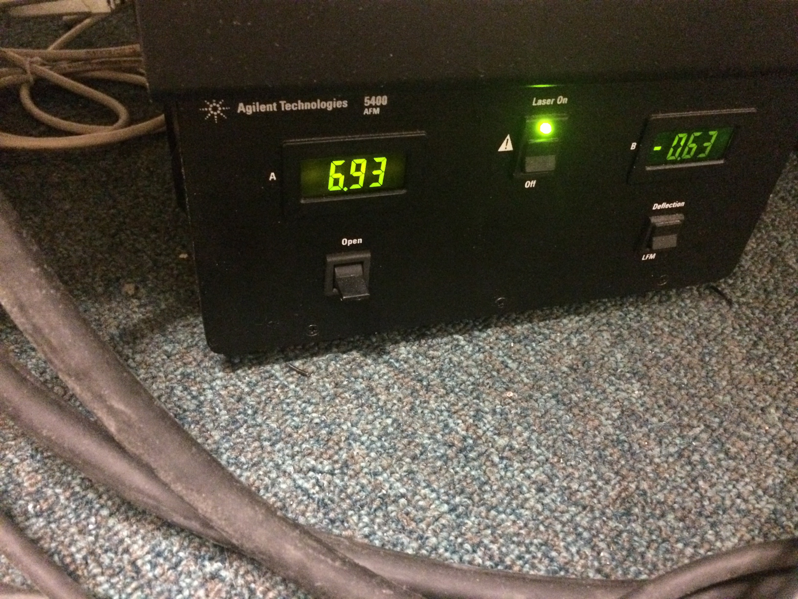
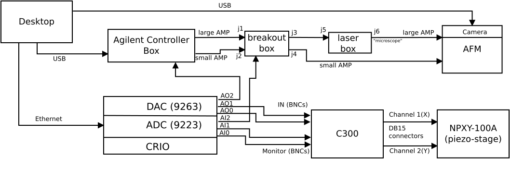
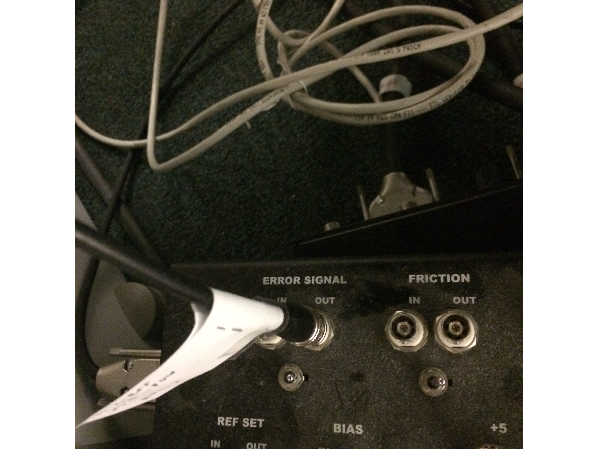
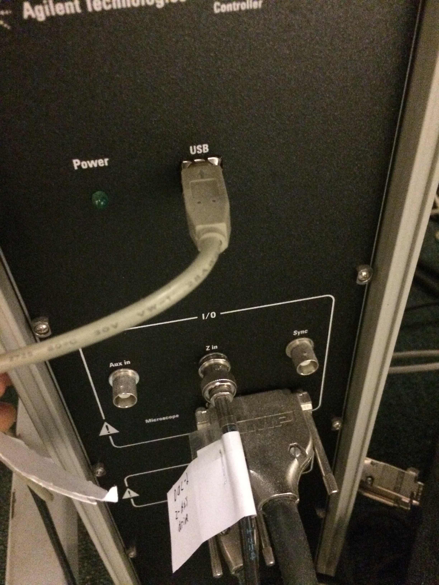
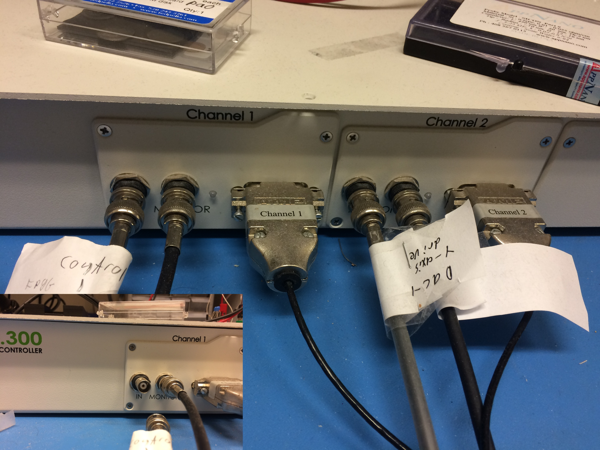
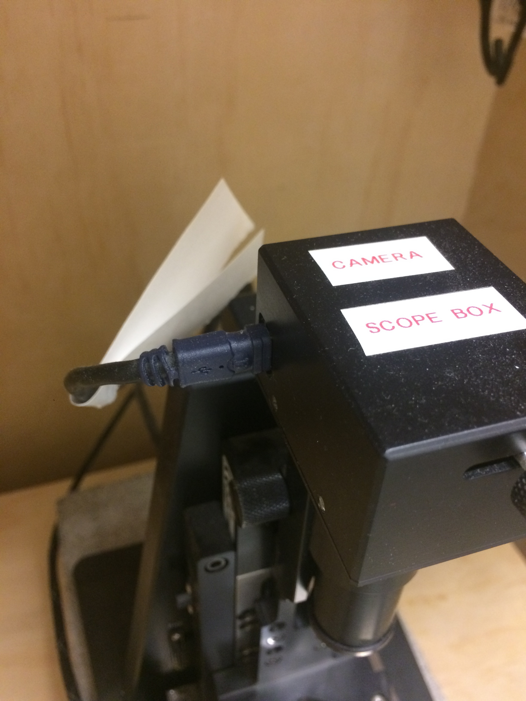
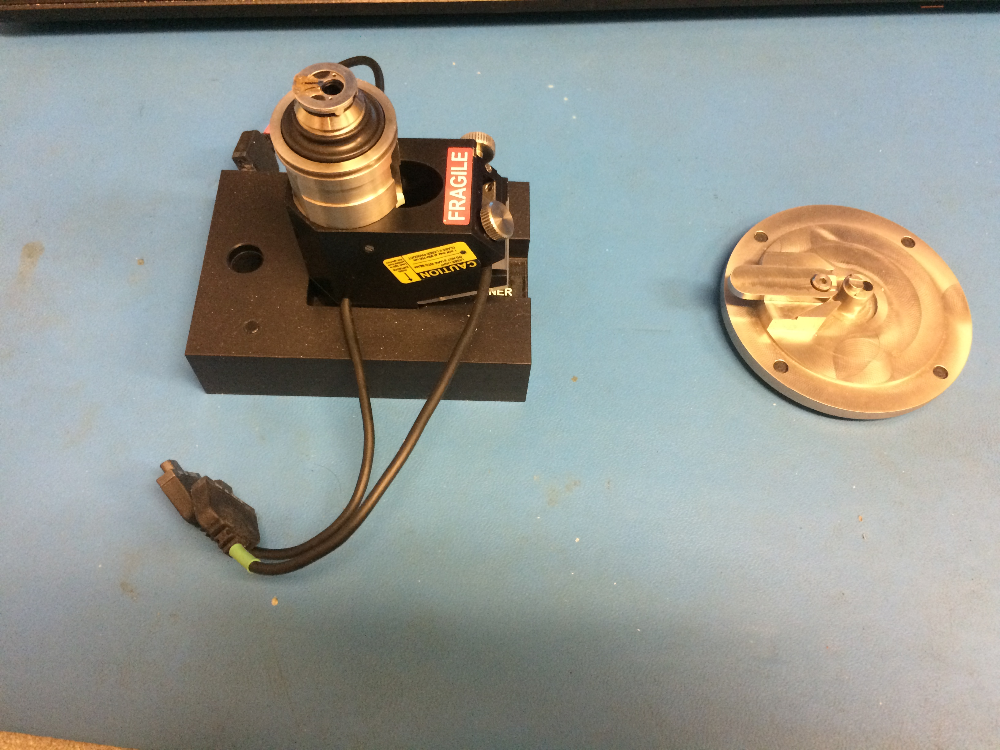
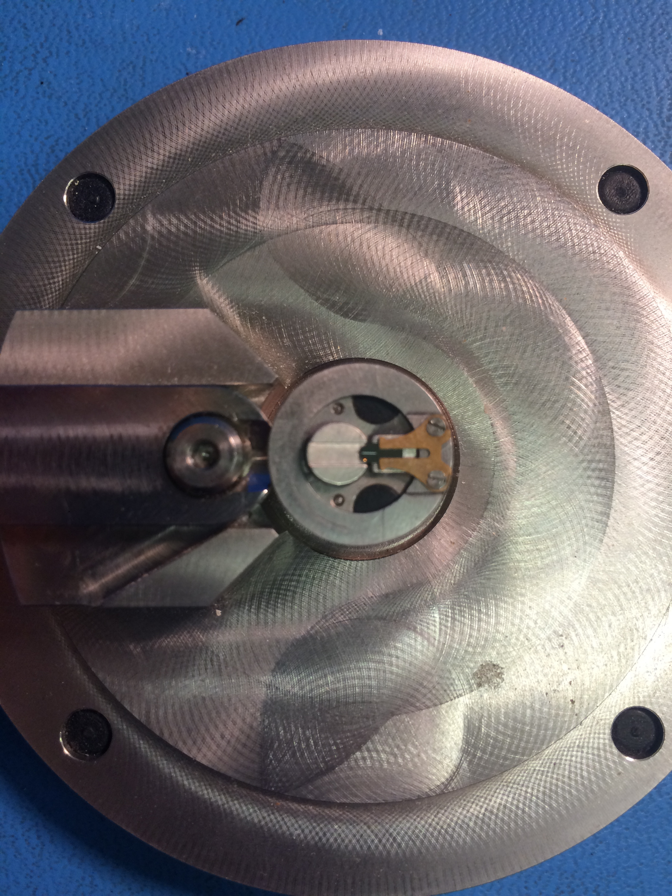
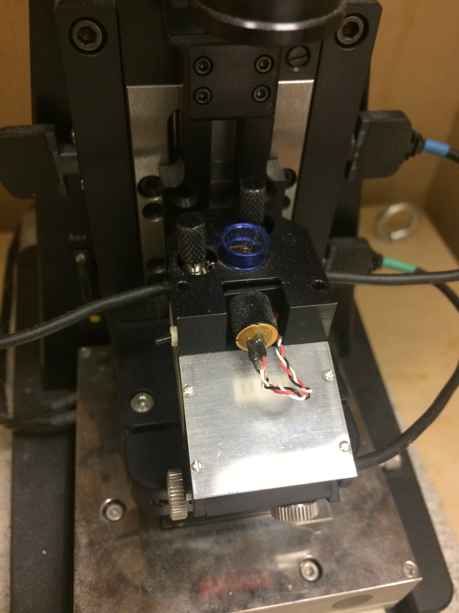

Notes on using the AFM
Table of Contents
1 Preliminaries
1.1 Git
Git is availible via mingw(64bit). mingw (minimal gnu for windows) provides a bunch of linux utilities, including gcc, git and a ton of other useful stuff.
1.2 Editing this file
The HTML version of this file is generated from afm-notes.org. A .org file is plaintext with markup, and is best edited with emacs.
To open emacs, open mingw (64 bit version) and enter emacs & at the command prompt.
1.3 Compiling c libraries.
If you ever need to re-compile the labview dlls I've written, it is crucial that you use the 32bit version of msys64, because (as of 2019), labview is a 32bit application. You also need the windows path to include various bits from the mingw. This was properly configured when I left things.
1.4 Computer password
With a touch of irony, the username and password of the desktop are:
username: arnold password: franklin
The labview site license number is M21X98212
2 Power on
To power on the equipment, I follow these steps:
- The CRIO is generally always powered on. These steps assume that is the case.
- Power on the control box. The switch is on the back side.
- Power on the C300, including the external fan (if it is still unplugged from the C300 circuit board). The switch is on the back side.
- Start the Agilent PicoView software. This must be done after step 1.
- Engage tip with the sample. Or fully retract the AFM head if you need to change the cantilever.
You can operate the stepper motor (which controls the course tip-sample separation) in the AFM in two ways.
- Through the PicoView software. This is useful for small adjustments.
Through the laser box. This is the "open" switch in Fig.~1. Push the switch up to retract the scanner, and down to move the scaner down. Intuitive, right? I generally use my toe for this, like a sewing machine. Keep in mind, when using the switch to move the scanner down, that there are zero safety measures to keep you from crashing the cantilever into the sample. This will result in catastrophic damage to the sample, and possibly the scanner.
In order to use the OPEN switch, the control box must be turned on, and the PicoView software must be started.

Figure 1: The laser box.
The order of power-on is not critical, except for a couple facts:
- When the c300 is power on, this will cause the piezo stage to move about 40 microns. You do not want the tip engaged with the sample when this happens. Therefore, ensure the XY-stage is powered on before you do the fine engagement.
- You must start PicoView after the control box is turned on. If you start it first, PicoView won't connect properly to the control box (or at least, I never figured out how to make that happen).
3 Shutdown
- Retract the tip away from the surface, using either the OPEN switch on the laser box, or the open button in PicoView. Doesn't need to be very far, a few clicks will do it.
- Exit PicoView
- Turn off the control box
- Turn off the C300.
Again, there is room for innovation here. The crucial thing is to retract the tip far far way, before the C300 is powered off.
4 Agilent equipment
There are four major pieces
- The control box. This is the giant thing that looks like a tower computer
- The laser box. This is a small cubish box with two led readouts on the front
- The breakout box. This is the rectangular box with a bunch of BNC connectors on the top.
- The actual AFM.
5 Cabling
An overview of how all the system components are hooked up is shown in Fig. 2. More details on each hook-up are in the following subsections.

Figure 2: The cabling connections between all the components.
5.1 Agilent only Cabling
The are two styles of AMP cables the connect the control box to the AFM. One is large in diameter, the other is small. These connect all four major pieces in the following order
------------ <--->j1-------------j3<--->j5-----------j6<---> ------------
|control box| |breakout box| |laser box| |AFM proper|
------------ <--->j2-------------j4 ----------- ------------
| |
|---------------------------| j7
In the above diagram, the top row of connection labels (j1,j3,j5,j6) correspond to the large AMP cables. The bottom row (j2,j4,j7) correspond to the small AMP cables. The connections correspond to the following labels on the boxes themselves:
- Large AMP:
- j1: "controller"
- j3: "microscope"
- j5: "controller" -j6: "microscope"
- Small AMP:
- j2: unlabeled. but to the front, and the connection closest to j1
- j4: unlabeled, directly behind j2
Note that only the large AMP cample is connected to the laser box.
5.2 Agilent to CRIO Cabling
The agilent hardware is connected to the CRIO with two BNC cables. The sensor (z-axis deflection) is connected to the breakout box, as shown in Fig. 3. The other end of this should be connected to the third ADC input (AI2) of the CRIO. Note the switch on the breakout box. You want this pointed towards the OUT BNC. See also the Agilent doc in the green binder.

Figure 3: The breakout box, showing the z-axis error signal BNC
The z-axis control goes into the the agilent control box (NOT the breakout box), as shown in Fig 4. The other end of this cable should be connected to the third DAC output (AO2).

Figure 4: The Agilent control box, showing the z-axis low voltage control BNC.
The desktop computer should be connected to the Agilent control box via the USB cable seen in Fig. 4
5.3 Piezo stage cabling
Fig. 5 shows the cable connectings to the C300 power amplifer. Channel 1 is the X-axis, channel-2 is the Y-axis. The DB15 connectors are the high-voltage supply and sensor lines that connect (and hardwire to) the nPoint stage. The BNC connectors hook up to the CRIO. Each BNC is labeled "IN" and "MINITOR". The "IN" line is actuation, the "MONITOR" line is the position sensor.

Figure 5: The c300 cabling.
The connection to the CRIO are:
Channel 1: In --> AO0 Channel 1: Monitor --> AI0 Channel 2: In --> AO1 Channel 2: Monitor --> AI1
If for some reason you want to look at the current, the DB15 connector is the thing that gets uplugged and re-routed.
If you read Jeff's thesis, he talks about a voltage scaling board. This is not needed when using the CRIO, because the CRIO ADC/DAC modules accept \(\pm\) 10 volts, where as he was using a DSP card with voltage levels around 2 volts.
5.4 CRIO
The CRIO talks to the desktop over ethernet. It has two modules: an ADC and a DAC. The ADC (AI*) is the NI 9223 and the DAC (AO*) is the NI 9263. The cables are coax, with a BNC on one end and stripped and tinned leads on the other. The 9223 and 9263 have screw terminals. These are be un-reliable. If things seem wonky, definitely check these connections. And if given the opportunity, definitely replace these with a version that has proper BNC connections.
As mentioned elsewhere, the fundamental connections are:
Channel 1: In --> AO0 Channel 1: Monitor --> AI0 Channel 2: In --> AO1 Channel 2: Monitor --> AI1 Z-control : --> AO2 Z-error : --> AI2 Z-friction: --> AI3
The friction signal does not need to be hooked up to do imaging, or anything else.
5.5 Desktop Connections
The desktop computer is connected to three pieces of hardware:
- The agilent control box via a USB cable.
- The Videology camera on the AFM body, via a USB cable. This connection is shown on the camera side in Fig. 6
- The CRIO, via an ethernet cable. There are two network cards in the desktop. This cable should be plugged directly (as a patch cable) between one of these NICs and the CRIO. The other network card is plugged into the LAN.
In principle, the nPoint C300 can also be plugged into the desktop via a USB cable. This allows you to use the use the nPoint PID controller. nPoint never provided me with software that would run on windows 7, so this is not currently hooked up.

Figure 6: The AFM video camera and cable.
6 Software
Aside from labview and matlab, there are two crucial pieces of software you need: PicoView and the Videology drivers and viewer. Both of these are saved in folder on the desktops desktop named XXX. It is really important not to lose this software. For the time being, you can still get PicoView from Keysight (who bought Agilent). But the video drivers took me forever to find (they came from some medical device website…).
7 Installing the cantilever
First read the Agilent manual. A really bright light is helpful. I big magnifier ring might help too if you have bad eyes. Lots of patience is also helpful. And some luck. For reference, at the end of my studies, this process (from removing the cantilever to getting another image) could take anywhere between 15 minutes to hours.
- Before you remove the scanner to replace the tip, you need to retract the scanner (see Section 3 above) really, really far. You want to see about a 3/8" gap between the sample and probe. This is to avoid crashing the tip into the sample when you remove the scanner.
- The scanner itself has a black aluminum holder. When replacing the cantilever, the scanner should be placed into this holder upside down, as shown in Fig. 7.

Figure 7: The scanner, holder, and cantilever jig.
The cantilever holder is the small metal ring at the very end. It is fixed to the scanner magnetically, and can be removed by grabbing the sides of the cantilever hold and just pulling it off. Then place the cantilever holder into the cantilever jig, as shown in Fig. 8. The handle on the jig slides back and forth. When it is slid all the way down, tension on the cantilever itself is released.
I use an Xacto knife to slide the old cantilever forward and remove it with tweazers. I've never been able to succfully put the cantilever back in the box and use it again. So if you plan to throw it out, you don't have to be overlly careful removing the old one.

Figure 8: The cantilever holder in place on the cantilever jig.
I use tweazers to transfer the new cantilever from its storage box to the holder. You want to grab the cantilever on the sides. It's a very delicate operation. Squeeze too hard and it will zing away. Avoid tipping the cantilever foward, so as not to damage the tip itself.
Once you (gently!) drop the cantilever in the holder, use the sharp tip of the Xacto knife to slide the cantilever into position. Ensure that you keep the blade soley on the fat part of the cantilever body.
- You want the cantilever aligned side to side in the holder groove. This is difficult to see in the photo.
- You want the cantilever to be as straight in the holder as you can manage. To help acheive this, you can release some of the tension in the jig so that the holder is partially clamping the cantilever.
- There is a very faint etch (or mark) on the post of the cantilever jig in Fig 8. You generally want the end of the fat part of the cantilever body approximately lined up with that mark. Here approximately means within 1/64". If you move the cantilever towards the mark, it will appear farther down in the video feed. This position will also (approximately) line up the horizontal mark on the cantilever body itself to the end of the tension brass fork.
7.1 Aligning the laser and Cantilever
The first thing is to read the Agilent manual.
If the laser is not aligned properly, the cantilever can break, which will damage the grating. You can see this in the video feed. If you can see the cantilever deflect at all during the course engagement (with the stepper motor), the cantilever is improperly aligned, and likely has been damaged. If the cantilever does break, you need to remove the scanner, then remove the sample, and clean it (see Section 8.1).
Generally (in my experience) when the laser is not aligned correctly, the laser spot is usually too far up the shaft of the cantilever. This is impossible to see in the video feed, so you must infer this condition.

Figure 9: The scanner, in the AFM.
Here is one method (the only one I found) to detect poor laser alignment:
- Align the laser to what you think is correct. This means that the total voltage sum should be maximized and the detector is mostly aligned (ie, the laser spot is near the center of the PicoView display).
- Move the laser (not the detector) a small amount left and right. This is the left-most black knurled knob in Fig. 9.
- If the laser is aligned correctly: the voltage intensity should be very "notchy". In other words, twisting the laser left-right knob by a very small amount in either direction (left or right) will cause the voltage reading to drop off to nearly zero. By "a small amount", I mean less than an 1/8 of a turn.
- If the laser is algined incorectly: If this is the case, try to move the laser spot down (down in the video feed), with the rear knob. You may have to keep adjusting the left-right position as you bring the laser down.
- Ideally, you want the laser at the very, very tip of the cantilever
Another way to tell if the laser is poorly aligned is take a frequency response of the mode near 215 Hz. Doing this requires that the laser is aligned sufficiently well that you see zero bending when the cantilever is engaged with the sample.
A poorly aligned laser seems to lead to the following:
- A low DC-gain. Normally, this should be at least 5dB. If it is below 0, something is off.
- A dip in FRF before the pole at 215 hz, as though a zero proceeded the pole.
- waveforms (pre-demodulation) that are either at the wrong frequency, or appear to be composed of multiple frequencies.
Point 3 may also happen when the cantilever is very worn. I'm not sure. Sometimes, the waveform will have a triangular appearence. This can usually be corrected by adjusting the offset voltage in the system-id software. When the laser is mis-aligned or the tip is worn, what I see sometimes is a waveform that looks more like the one shown in Fig. 10

Figure 10: A funky sinusoid. If you see something like this while identifying the Z axis, something is amiss.
8 Cleaning the sample
8.1 Gratings
A cheap way to clean a grating is to put a big dab of NuSkin on the grating. You want to just drip it onto the grating, and avoid touching the grating with the bristles of the NuSkin applicator brush. Let it thoroughly dry (I usually let it go over night). Then starting at the edges, use the Xacto knife and tweazers to peel the NuSkin off. Be very carful not to touch the center portion of the grating with these tools because that will damage or ruin the grating.
8.2 Mica
There is no real point to cleaning mica. Rather, you just want to re-cleave it. See Section 9.
9 Preparing Mica
The surface of freshly cleaved mica is atomically flat. This means that you can race the probe across the mica surface and see basically no deflection, aside from sample tilt.
To use a mica sample, it needs to be fixed to a sample holder (which is one of the little circular steel disks). To do that, I use clear finger nail polish. It only takes a very small dab, because once the mica is pressed down, most of it will squeeze out. It is important to gently press the mica disk into place to minimize tilt.
Once the finger nail polish has thoroughly dried, the mica must be cleaved. This is a rather delicate process. The technique I use is to take the Xacto knife and try to basically peel a layer of the mica off the top. It can take some fiddling to get right.
10 Your first image
This section assumes that the AFM is powered on (see 2), a cantilever is installed and properly aligned (see Sec. 7).
The XY-stage should be turned on and the cantilever should be engaged with the sample, via PicoView. For best results, you should let the AFM warm up, which basically means letting it just sit there for 20 minutes or so. While you do this, ensure that the PicoView Z-axis control loop is active. When the AFM is sufficently warmed up turning the PicoView control loop off, and the deflection signal should drift very, very slowly. When the AFM is insufficiently warmed up, the deflection signal will creep upward relatively fast, e.g., going past 1 volt in less than a minute. The more of this drift is gone from the system, the better the results, especially for CS scanning.
10.1 Software
Open LabView. You want to open the afmimagingcontrol.lvproj. It is located in C:\Users\arnold\Documents\afm-cs\labview
There are two entry point VIs:
- auto-sys-id/playautoid.vi. This vi will measure a FRF of the z-axis bending mode, and fit a second order transfer function. If you want to take PSDs or other FRF measurements, you need to load the systemID.lvproj project from
C:\Users\arnold\Documents\labview\sysID\systemID.lvproj.
- play-general-scan.vi. This vi will do either raster or CS, potentially in batches, depending on the input files you load.
10.2 Measure the Z-axis FRF
Once afmimagingcontrol.lvproj is opened, open playautoid.vi, which is located in the 'auto-sys-id' folder in the project file.
There several settings:
- Amplitude (volts): I find 0.1 to usually work well.
- u-max: default of 1 volt is good
- offset: 0.1 volt usually works well. If the outgoing sin waves look funky, try tweaking this first, especially if it looks like part of the waveform is clipped off, then try decreasing the offset.
- Input File:
Z:\afm-cs\sysID\z-axis_sines_info_quick_firstRes.json, will identify the first bending mode resonance of the Z-axis. This file is generated by the matlab script:
C:\Users\arnold\Documents\afm-cs\matlab-code\build_z_axis_swept_meta_data_intsamps_zaxis.m
- Output File: The default is C:\Users\arnold\Documents\afm-cs\labview\firstresfitcurrent.json, Whatever this is set to, you need to load this file when running the scan in the next step.
10.3 Scanning concepts
Both raster and CS scanning happen with the same labview VI, play-general-scan.vi. This VI can take a batch of scans, ie. multiple raster and CS scans in one go, while the cRIO FPGA maintains closed-loop control.
Each scan is defined by an input file. These input files are created by two matlab scripts:
C:\Users\arnold\Documents\afm-cs\matlab-code\generate_raster_traj_fourier.m, which will generate the input files for raster scanning. By default, this script will use a truncated fourier series for the triangle wave. By default, this will generate an input file for a 5-micron by 5-micron image, which will be saved toZ:\afm-cs\imaging\raster\5microns\parents-loopC:\Users\arnold\Documents\afm-cs\matlab-code\generate_mu_path_grating.m, will generate the CS scanning input files.Z:\afm-cs\imaging\cs-imaging\5microns\parents-loop\
When a scan is taken, a folder with todays date will be created, and the output data will be written into the folder. The output file name will be derived from the input filename, with a number e.g., '01' appended. If you take multiple scans in a row with the same input file (say stopping the scan, then restarting), the number appended will be automatically incremented (this generally works, but the incrementing is a bit buggy, though files are never overwritten). This behaivor can be changed by setting the 'overwrite' toggle to true.
In addition, an input file for the XY-axis controller is needed. This file is only loaded once at the start of the imaging run. It can be set in the xy-axis-tweaks tab of play-general-scan.vi. Currently, the default will load Z:\afm-cs\step-exps\LinControls-const-sig_5micron_xyff_DyDx.json, which will implement the loop shaping controller described in the TMECH paper.
The fpga code and play-general-scan.vi can switch between the loop shaping controller and the state space controller.
These controller input files are generated via the matlab scripts :
C:\Users\arnold\Documents\afm-cs\matlab-code\build_controllers_with_xyFF_DxDy.m, for the loop shaping controller.C:\Users\arnold\Documents\afm-cs\matlab-code\build_state_space_x_controller.m, for the state space based controller.
10.4 Raster Scanning
- Select an input file. This goes into the array of input files. The subfolder (like 'parents-loop') the input file lives in should be copied into
parent-subfolder-name. This is ugly and could easily be done automatically! - Set the
z-axis FRF-fit pathpath box to the path of the fit you obtained above. Set the
state-machine-paramsandz_axis_params. The UI here is not very good. This is a bit ugly, because some of these params are derived from the input file, and some you set manually (though the defaults should be good.) This is another place of low hanging fruit for software improvement. The fields:numEntities,prescan_samples,TF_paramsare derived from the input files.The defaults that you need to worry about should be:
- collectall: true. This collects data during each state of the state machine, (aside from zero), rather than just during the scanning.
- TOL: 0.0259 (volts) The z-axis transitions from lowering the tip to scanning when the
|deflection - setpoint_scan|<TOL. - zuperrthreshold: 0.051 (volts) The z-axis transitions from tip-up when
|deflection - setpoint_up|<zup_err_threshold. - xyerrorthreshold: 0.01 (volts)
- xysettledsamplesthreshold: 20. When the x and y error are less than
xy_error_thresholdfor more thanxy_settled_samples_threshold, the state machine stops tracking the setpoint. Kiz_down: 0.045 usually works well. z axis integrator gain during tip descent.Ki_scan: 0.07 usually works. z axis integrator gain during scanning.- setpointscan: -0.3 volts. Setpoint of z axis while scanning.
- setpointup: -0.8 volts. target setpoint during tip retraction. If this is too negative complete detachment occurs.
- uzsafe: 0.3 volts. maximum variation in voltage to allow during a scan.
- zumax: 2.0 volts. absolute maximum z-axis control voltage to allow before aborting (for fear of instability).
- doDz: turn on the z-axis axis bending mode inversion. Without this, you need to back the integral gains way down.
- PIDwhilexymove: defualt false, leave the z-axis control loop closed while executing the XY-move.
To see the visualization while the scan is happening, open the process-scan-data.vi in a separate monitor. The graphs in this VI will update while play-general-scan.vi is running.
At this point you should be able to click the run button (white arrow).
Wait until you see the state0-count start rapidly incrementing. Hit the trigger-0 toggle. The scan should commence. You should see the heatmap in process-scan-data.vi begin to update.
10.4.1 Finding the imaging area
You can move the sample back and forth with the knobs on the stage, in order to find different areas of the grating. Make absolutely sure that the cantilever is completely disengaged (via PicoView) when doing this. The video helps somewhat, but it's quality has degraded over time. I don't know whats up with that. The best advice I can give is to try to center the grating on the post. Try to make it square with the afm.
Then, move the stage around with the knobs. You should still be able to see large arrows pointing inward. Those indicate the boundaries of the grating proper. The area with holes 500 nm (that are shown in my thesis) are in the very middle of the grating. To find these, I basically look at the schematic of the grating that is in the green booklet, take a fast scan (say 64 lines at 5 hz), try to guess where I'm scanning over on the grating, and make small adjustments untill I find the area I want. This is extremely tedious and time consuming, and requires a lot of patience.
If you can figure out how to restore the quality of the video feed, your life will be way better. In that case, you should be able to make out the center area, and stick it under the cantilever.
10.5 CS Scanning
Everything is the same. Just select a different input file, and switch tabs in the process-scan-data.vi. This only shows the time series data, no reconstructions.
10.6 Post-processing.
For an example of post-processing, see C:\Users\arnold\Documents\afm-cs\matlab-code\tmech-plots\process_data_6_5_2019.m. You need to look until line 190 or so to see how things work. Everyhing after that is analysis and creating the published figures.